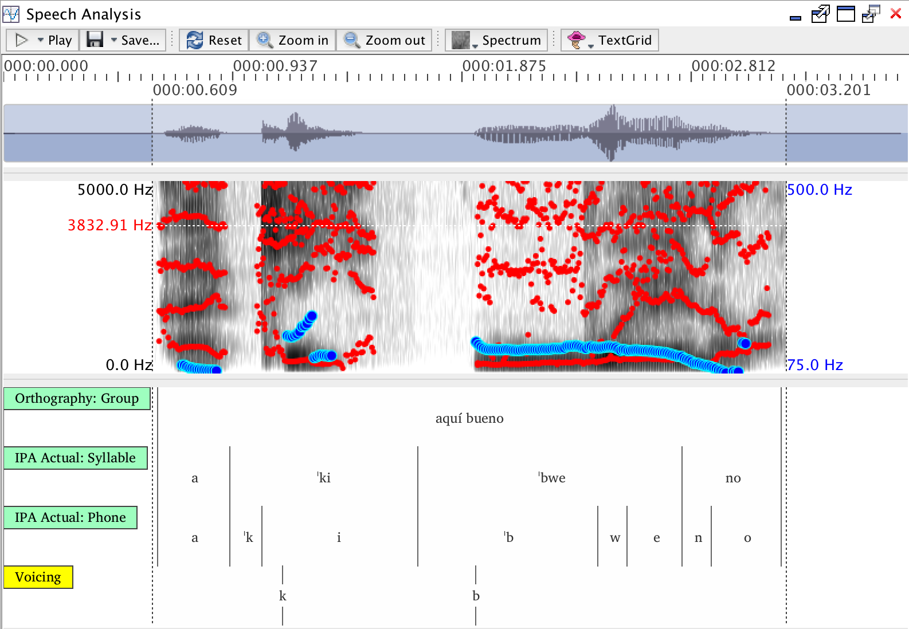

Voice Onset Time (VOT)
The Voice Onset Time (VOT) report calculates VOT for each query result. Under the setup described below:
Segment duration for stops is calculated from stop closure to stop release. While closure is often difficult to pinpoint in a regular spectrogram, this is inconsequential to VOT calculation given that it is based on stop release and the Voicing point tier marker:
Voicing is marked independently of the closure-release cycle, so that negative, null, and positive VOT values can be computed based on the time value of the onset of voicing minus the time value of consonant release.
Parameters
Duration of the closure-release cycle for the stop indicated through the regular segment boundaries within the IPA Actual: Phone tier.
Voicing tier required in TextGrid to indicate voicing. This tier must be a point tier (default name: 'Voicing').
Data preparation
A TextGrid must be assigned to the session and tier mappings setup for the Phon tier (default 'IPA Actual') used in the query. A point tier (default name 'Voicing') must exist, with a point for each interval for which VOT calculation will be performed. The point should be have the same label as the interval to which it is related not including stress markers.
Example:

VOT Calculation
Given a TextGrid interval "T" and a TextGrid point (i.e., voicing) "P", VOT is calculated as:
VOT = P - T.end
In the example above, k has a positive VOT (onset of voicing after release), while b has a negative VOT (onset of voicing before release).
Example
The table produced will have the following columns:
Session
Speaker
Age
Record #
Orthography
IPA Target
IPA Actual
Result/Tier name(s)
Start Time(s)
End Time(s)
Release(s)
Dur + VOT(s)
VOT(s)
| Session | Speaker | Age | Record # | IPA Actual | Start Time(s) | End Time(s) | Release(s) | Dur + VOT(s) | VOT(s) |
|---|---|---|---|---|---|---|---|---|---|
| Anne.Session | Anne | 02;01.17 | 1 | ɡ | 6.422 | 6.568 | 6.543 | 0.121 | -0.025 |
| Anne.Session | Anne | 02;01.17 | 1 | d | 6.764 | 6.882 | 6.915 | 0.151 | 0.033 |
| Anne.Session | Anne | 02;01.17 | 2 | ŋ | 10.752 | 10.898 | 10.925 | 0.173 | 0.027 |
| Anne.Session | Anne | 02;01.17 | 2 | ŋ | 10.898 | 11.057 | 10.996 | 0.098 | -0.061 |
| Anne.Session | Anne | 02;01.17 | 3 | tʰ | 15.2 | 15.398 | 15.272 | 0.072 | -0.126 |
| Anne.Session | Anne | 02;01.17 | 3 | tʰ | 15.816 | 16.067 | 15.914 | 0.099 | -0.152 |
| Anne.Session | Anne | 02;01.17 | 4 | tʰ | 24 | 24.22 | 24.07 | 0.071 | -0.149 |